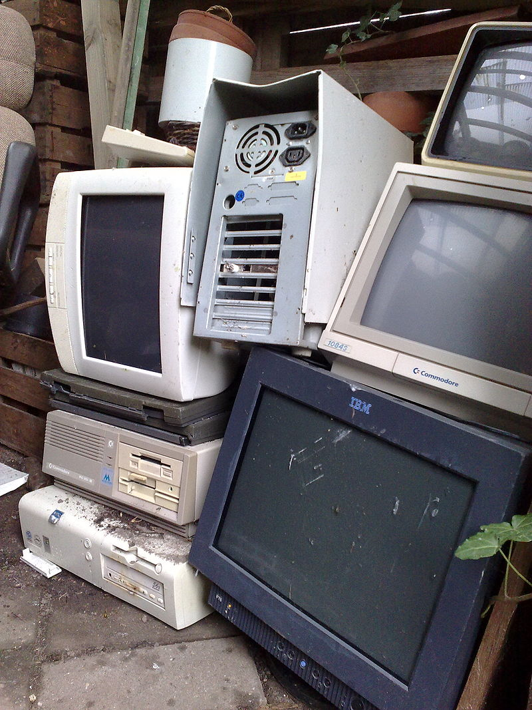

What is e-waste?
The Oxford Dictionaries definition of e-waste is: Discarded electronic appliances such as mobile phones, computers, and televisions. Wikipedia’s definition of e-waste is: E-waste or electronic waste is created when an electronic product is discarded after the end of its useful life.